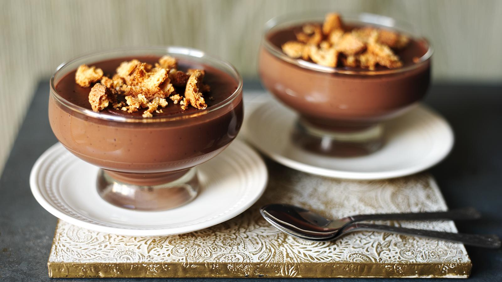

Go Back
Warm chocolate and amaretto pudding

Description
Gennaro Contaldo's simple, old-fashioned chocolate pudding can be served
either warm or chilled and is very easy to prepare.
Original recipe
Ingredients
- 500ml oz milk
- 1 tbsp plain flour
- 2 tbsp caster sugar
- 1 vanilla pod, halved lengthways, seeds removed
- 80ml oz Amaretto (or other almond liqueur)
- 100g dark chocolate, finely chopped
- 50g unsalted butter
- 30g amaretti biscuits, crushed
Steps
- Warm the milk in a saucepan over a low heat.
-
Mix the flour, sugar and vanilla seeds in a separate saucepan until
smooth, then whisk in the warm milk, a little at a time, until smooth.
Place the pan onto the heat and cook over a gentle heat for 2-3 minutes,
stirring continuously.
-
Whisk in the Amaretto liqueur and continue to whisk until the mixture
thickens.
-
Remove the pan from the heat and stir in the chocolate and butter.
-
To serve, spoon the mixture into serving glasses and sprinkle over the
crushed amaretti biscuits.